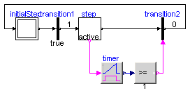
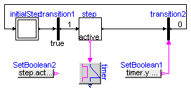
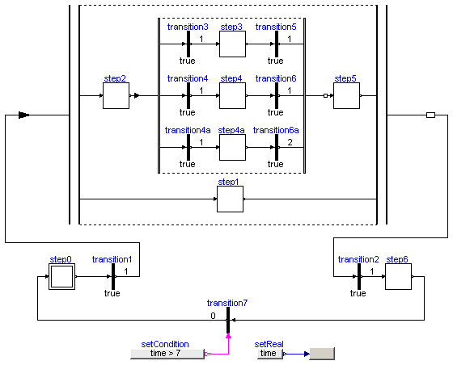
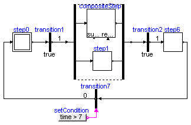
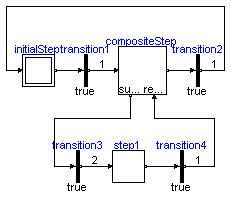
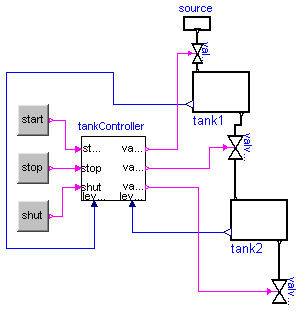

| Name | Description |
|---|---|
| A first simple StateGraph example | |
| A variant of the first simple StateGraph example | |
| A variant of the first simple StateGraph example | |
| Example to demonstrate parallel and alternative execution paths | |
| Example to demonstrate parallel activities described by a StateGraph | |
| Example to demonstrate how a hierarchically structured StateGraph can suspend and resume actions on different levels | |
| Demonstrating the controller of a tank filling/emptying system | |
| Utility components for the examples |
 Modelica.StateGraph.Examples.FirstExample
Modelica.StateGraph.Examples.FirstExample

model FirstExample "A first simple StateGraph example" extends Modelica.Icons.Example; InitialStep initialStep; Transition transition1(enableTimer=true, waitTime=1); Step step; Transition transition2(enableTimer=true, waitTime=1); equation connect(initialStep.outPort[1], transition1.inPort); connect(transition1.outPort, step.inPort[1]); connect(step.outPort[1], transition2.inPort); connect(transition2.outPort, initialStep.inPort[1]); end FirstExample;
Modelica.StateGraph.Examples.FirstExample_Variant2
model FirstExample_Variant2 "A variant of the first simple StateGraph example" extends Modelica.Icons.Example; InitialStep initialStep; Transition transition1(enableTimer=true, waitTime=1); StepWithSignal step; TransitionWithSignal transition2; Modelica.Blocks.Logical.Timer timer; Modelica.Blocks.Logical.GreaterEqualThreshold greaterEqual(threshold=1); equation connect(initialStep.outPort[1], transition1.inPort); connect(transition1.outPort, step.inPort[1]); connect(step.active, timer.u); connect(step.outPort[1], transition2.inPort); connect(timer.y, greaterEqual.u); connect(greaterEqual.y, transition2.condition); connect(transition2.outPort, initialStep.inPort[1]); end FirstExample_Variant2;
Modelica.StateGraph.Examples.FirstExample_Variant3
model FirstExample_Variant3 "A variant of the first simple StateGraph example" extends Modelica.Icons.Example; InitialStep initialStep; Transition transition1(enableTimer=true, waitTime=1); StepWithSignal step; TransitionWithSignal transition2; Modelica.Blocks.Logical.Timer timer; Modelica.Blocks.Sources.BooleanExpression SetBoolean1(y=timer.y > 1); Modelica.Blocks.Sources.BooleanExpression SetBoolean2(y=step.active); equation connect(initialStep.outPort[1], transition1.inPort); connect(transition1.outPort, step.inPort[1]); connect(step.active, timer.u); connect(step.outPort[1], transition2.inPort); connect(transition2.outPort, initialStep.inPort[1]); connect(SetBoolean1.y, transition2.condition); end FirstExample_Variant3;

This is an example to demonstrate in which way parallel activities can be modelled by a StateGraph. When transition1 fires (after 1 second), two branches are executed in parallel. After 6 seconds the two branches are synchronized in order to arrive at step6.
Before simulating the model, try to figure out whether which branch of the alternative sequence is executed. Note, that alternatives have priorities according to the port index (alternative.split[1] has a higher priority to fire as alternative.split[2]).
model ExecutionPaths "Example to demonstrate parallel and alternative execution paths" extends Modelica.Icons.Example; InitialStep step0; Transition transition1(enableTimer=true, waitTime=1); Step step1; Transition transition2(enableTimer=true, waitTime=1); Step step6; Step step2; Transition transition3(enableTimer=true, waitTime=1); Transition transition4(enableTimer=true, waitTime=1); Step step3; Step step4; Transition transition5(enableTimer=true, waitTime=1); Transition transition6(enableTimer=true, waitTime=1); Step step5; Modelica.Blocks.Sources.RealExpression setReal(y=time); TransitionWithSignal transition7; Modelica.Blocks.Sources.BooleanExpression setCondition(y=time > 7); Transition transition4a(enableTimer=true, waitTime=1); Step step4a; Transition transition6a(enableTimer=true, waitTime=2); StateGraph.Temporary.NumericValue NumericValue1; Alternative alternative(nBranches=3); Parallel Parallel1; equation connect(transition3.outPort, step3.inPort[1]); connect(step3.outPort[1], transition5.inPort); connect(transition4.outPort, step4.inPort[1]); connect(step4.outPort[1], transition6.inPort); connect(transition7.outPort, step0.inPort[1]); connect(step6.outPort[1], transition7.inPort); connect(transition4a.outPort, step4a.inPort[1]); connect(step4a.outPort[1], transition6a.inPort); connect(setCondition.y, transition7.condition); connect(setReal.y, NumericValue1.Value); connect(transition3.inPort, alternative.split[1]); connect(transition4.inPort, alternative.split[2]); connect(transition4a.inPort, alternative.split[3]); connect(transition5.outPort, alternative.join[1]); connect(transition6.outPort, alternative.join[2]); connect(transition6a.outPort, alternative.join[3]); connect(step2.outPort[1], alternative.inPort); connect(alternative.outPort, step5.inPort[1]); connect(step2.inPort[1], Parallel1.split[1]); connect(step1.outPort[1], Parallel1.join[2]); connect(step0.outPort[1], transition1.inPort); connect(transition2.outPort, step6.inPort[1]); connect(transition1.outPort, Parallel1.inPort); connect(Parallel1.outPort, transition2.inPort); connect(step5.outPort[1], Parallel1.join[1]); connect(Parallel1.split[2], step1.inPort[1]); end ExecutionPaths;
 Modelica.StateGraph.Examples.ShowCompositeStep
Modelica.StateGraph.Examples.ShowCompositeStep
This is the same example as "ExecutionPaths". The only difference is that the alternative paths are included in a "CompositeStep".
model ShowCompositeStep "Example to demonstrate parallel activities described by a StateGraph" extends Modelica.Icons.Example; Utilities.CompositeStep compositeStep; InitialStep step0; Transition transition1(enableTimer=true, waitTime=1); Step step1; Transition transition2(enableTimer=true, waitTime=1); Step step6; TransitionWithSignal transition7; Parallel Parallel1; Modelica.Blocks.Sources.BooleanExpression setCondition(y=time > 7); equation connect(step0.outPort[1], transition1.inPort); connect(transition7.outPort, step0.inPort[1]); connect(step6.outPort[1], transition7.inPort); connect(transition2.outPort, step6.inPort[1]); connect(transition1.outPort, Parallel1.inPort); connect(Parallel1.outPort, transition2.inPort); connect(compositeStep.inPort, Parallel1.split[1]); connect(compositeStep.outPort, Parallel1.join[1]); connect(step1.inPort[1], Parallel1.split[2]); connect(step1.outPort[1], Parallel1.join[2]); connect(setCondition.y, transition7.condition); end ShowCompositeStep;
Modelica.StateGraph.Examples.ShowExceptions
CompositeStep "compositeStep" is a hierarchical StateGraph consisting of two other subgraphs. Whenever component "compositeStep" is suspended, all steps with in "compositeStep" are deactivated. By entering "compositeStep" via its "resume" port, all steps within "compositeStep" are activated according to their setting before leaving the "compositeStep" via its "suspend" port.
model ShowExceptions "Example to demonstrate how a hierarchically structured StateGraph can suspend and resume actions on different levels" extends Modelica.Icons.Example; Utilities.CompositeStep1 compositeStep; InitialStep initialStep; Transition transition1(enableTimer=true, waitTime=1); Transition transition2(enableTimer=true, waitTime=1); Transition transition3(enableTimer=true, waitTime=2); Step step1; Transition transition4(enableTimer=true, waitTime=1); equation connect(transition1.outPort, compositeStep.inPort); connect(initialStep.outPort[1], transition1.inPort); connect(compositeStep.outPort, transition2.inPort); connect(transition2.outPort, initialStep.inPort[1]); connect(compositeStep.suspend[1], transition3.inPort); connect(transition3.outPort, step1.inPort[1]); connect(step1.outPort[1], transition4.inPort); connect(transition4.outPort, compositeStep.resume[1]); end ShowExceptions;
Modelica.StateGraph.Examples.ControlledTanks
With this example the controller of a tank filling/emptying system is demonstrated. This example is from Dressler (2004), see Literature. The basic operation is to fill and empty the two tanks:
The above "normal" process can be influenced by three buttons:
model ControlledTanks
"Demonstrating the controller of a tank filling/emptying system"
extends Modelica.Icons.Example;
Utilities.TankController tankController;
StateGraph.Temporary.RadioButton start(reset={stop.on,shut.on},
buttonTimeTable={1,13,15,19});
StateGraph.Temporary.RadioButton stop(reset={start.on,shut.on},
buttonTimeTable={13,15,19,21});
StateGraph.Temporary.RadioButton shut(reset={start.on,stop.on},
buttonTimeTable={21,100});
Utilities.Tank tank1;
Utilities.Tank tank2;
Utilities.valve valve1;
Utilities.Source source;
Utilities.valve valve2;
Utilities.valve valve3;
equation
connect(tank1.outflow1, valve2.outflow1);
connect(tank2.inflow1, valve2.inflow1);
connect(tank2.outflow1, valve3.outflow1);
connect(tank1.inflow1, valve1.inflow1);
connect(shut.on, tankController.shut);
connect(stop.on, tankController.stop);
connect(start.on, tankController.start);
connect(tank1.levelSensor, tankController.level1);
connect(tank2.levelSensor, tankController.level2);
connect(tankController.valve1, valve1.valveControl);
connect(tankController.valve2, valve2.valveControl);
connect(tankController.valve3, valve3.valveControl);
connect(source.outflow1, valve1.outflow1);
end ControlledTanks;